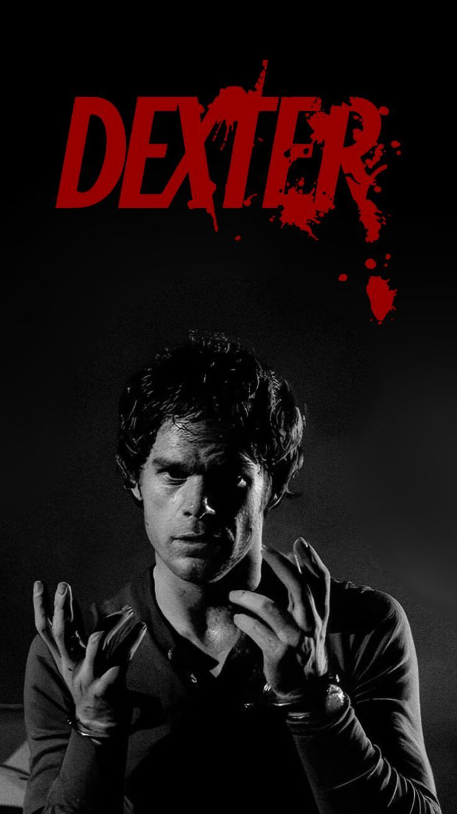
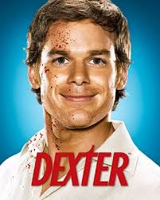

Про серіал
Це культова історія про судового експерта з бризок крові, який веде подвійне життя серійного вбивці. Декстер Морган дотримується «Кодексу Гаррі», вбиваючи лише тих злочинців, які уникли правосуддя.
Про головного героя
Декстер Морган — складна та суперечлива особистість, яка працює провідним експертом із бризок крові в поліції Маямі. Зовні він виглядає як зразковий громадянин, ввічливий колега та турботливий чоловік, але всередині нього живе «Темний попутник» — непереборна жага до вбивства.
Щоб спрямувати цю руно з ним, Декстер має право вбивати лийнівну силу в корисне русло, його прийомний батько Гаррі навчив його спеціальному «Кодексу». Згідше тих, хто сам є вбивцею і чию провину доведено на сто відсотків, що робить його свого роду «санітаром» суспільства А також виходе зараз 2сезон декстер воскресіння якщо додивилижеш полдивитися ще продовження під нся орігінальний серіал то можеш подивитися продовження під назвою нова кров а після цього моазвою декстер воскресіня і уже роблять 2сезон воскресіння 🔥 Про «Декстер: Воскресіння» і другий сезон 📌 «Декстер: Воскресіння» (Dexter: Resurrection) — це нове продовження франшизи, яке вийшло влітку 2025 року як прямий сіквел до Декстер: Нова кров. Воно показує, що Декстер вижив після пострілу Херрісона і тепер опиняється в Нью-Йорку, де шукає сина й зіштовхується з новими вбивцями та складними моральними виборами. ✅ Офіційно підтверджено, що другий сезон „Декстер: Воскресіння“ вже затверджено для виробництва. Майкл С. Холл, який грає Декстера, опублікував відео з анонсом, що історія продовжиться, і вже формується кімната сценаристів. 📆 Точна дата виходу ще не оголошена, але за чутками, зйомки можуть початися навесні 2026, а прем’єра очікується наприкінці 2026 року. 🧠 Цікаві факти про сюжет та персонажів 🔹 Декстер не повернувся випадково. За словами Майкла С. Холла, він сам запропонував ідею, щоб персонаж не помирав у Нова кров, що дало можливість продовжити історію. 🔹 Серед повернутих персонажів у Воскресінні — не лише Декстер, а й: Херрісон Морган (його син) Ангел Батіста Гаррі Морган (його батько у флешбеках чи у сприйнятті) і деякі нові обличчя з грандами, як Пітер Дінклейдж чи Ума Турман. ❗️Одне важливе: Дебра Морган (сестра Декстера), яку грала Дженніфер Карпентер, не повертається у „Воскресінні“ — акторка підтвердила, що не буде частиною цього проекту. 📺 Як краще дивитися по порядку Ось короткий рекомендований порядок перегляду, якщо хочеш зрозуміти сюжети найкраще: Оригінальний серіал «Декстер» (8 сезонів, 2006–2013) «Dexter: New Blood» (2021) — міні-серіал-сиквел «Dexter: Resurrection» (2025) — продовження «Dexter: Resurrection» сезон 2 — вже у виробництві Це дозволяє побачити всі сюжетні арки Декстера і розвиток від першого сезону до сучасності. 📌 Що ще може бути ✨ Незважаючи на те, що приквел «Dexter: Original Sin» був скасований після першого сезону, франшиза не зупиняється — студія робить ставку саме на Resurrection і його продовження. 🔥 Також творці кажуть, що вони мають довгострокові плани щодо серіалу — і, можливо, будуть ще нові сезони чи спін-офи, якщо Холл захоче продовжити роль Декстера 📌 Що це за серіал «Декстер: Нова кров» — це міні-серіал-продовження оригінального Декстера, який вийшов у 2021–2022 роках і складається з 10 серій. Він показує, що сталося з Декстером 10 років після фіналу оригінального шоу. 🌲 Основний сюжет Після подій оригінального серіалу Декстер живе інкогніто під ім’ям Джим Ліндзі у глушині штату Нью-Йорк — маленьке містечко Айрон Лейк. Він працює продавцем зброї в місцевому магазині і намагається пригасити свою пристрасть до вбивства, ведучи тихе життя. У Декстера є романтичні стосунки з шерифом Анджелою Бішоп, колегою з місцевої поліції. Його спокій порушується, коли в містечку починають відбуватися нові вбивства, які тягнуть Декстера назад у світ темних справ. 👦 Хорощі нові сюжетні лінії Важлива частина серіалу — це повернення його сина Херрісона. Декстер знову зустрічається з ним, і їхні стосунки стають дуже складними — особливо коли між ними починає виникати нова моральна дилема. У серіалі з’являється новий антагоніст — Курт Келдвелл, чиї мотиви і дії сильно впливають на розвиток подій і на те, хто і як має жити. ❗ Заключні події серіалу Фінал Нова кров був дуже драматичним: Херрісон стріляє в Декстера, залишивши його, здається, померлим на засніженій землі. Саме це стало стартом для продовження у Dexter: Resurrection. 🧠 Що “Нова кров” додала до історії Декстера 🔹 Декстер уже не просто маніяк-мисливець — він має сімейні зв’язки, з якими треба рахуватися. 🔹 Серіал показує, як персонаж намагається бути нормальним — але темна частина його не зникає. 🔹 Історія піднімає питання спадковості темного боку (як впливає Декстер на Херрісона)❄️ Атмосфера і настрій «Нова кров» дуже відрізняється від оригінального Декстера. Там не спекотний Маямі, а холод, сніг, тиша і ізоляція. Це важливо, бо: Декстер виглядає більш втомленим і зламаним серіал повільніший, більш психологічний багато сцен про самоконтроль і внутрішню боротьбу Темний Пасажир тут не зник — він просто загнаний у кут. 🩸 Перше вбивство за 10 років Один із ключових моментів — коли Декстер зривається після 10 років “зав’язки”. Це показують дуже жорстко й чесно: він сам розуміє, що це поразка кайф і огиду показують одночасно стає ясно: від себе не втечеш Це повертає справжнього Декстера, але вже не такого впевненого, як раніше. 👨👦 Декстер vs Херрісон Одна з найсильніших тем серіалу: Декстер хоче бути хорошим батьком, але не знає як він боїться, що зламав сина водночас починає бачити в Херрісоні віддзеркалення себе Кульмінація — коли Декстер показує Херрісону свій Кодекс. Для фанатів це один із найважчих моментів у всій франшизі. 🧊 Антагоніст Курт Келдвелл Курт — не типовий “маніяк тижня”: він холодний, спокійний, маскується під добряка має свій “ритуал”, але без ідеології, як у Декстера між ними виникає дзеркальне протистояння: один убиває “заради справедливості”, інший — просто тому що може Саме Курт підштовхує фінал до трагедії. 💔 Чому фінал такий болючий Фінал “Нової крові” спеціально зробили некомфортним: Декстер нарешті дивиться правді в очі Херрісон мусить зробити вибір, який не мав би робити жоден син це не “героїчна смерть”, а наслідок усіх рішень Декстера Саме через це фінал розділив фанів, але логічно підвів риску під його шляхом. 🎯 Навіщо взагалі була “Нова кров” Коротко: щоб переосмислити Декстера, а не просто воскресити щоб показати: Кодекс не рятує — він лише відкладає кінець щоб передати історію наступному поколінню (Херрісон) А вже «Воскресіння» — це відповідь на питання: 👉 а що, якщо кінець був не кінцем? ...
Рейтинг сезонів за моєю думкою:
Постери

